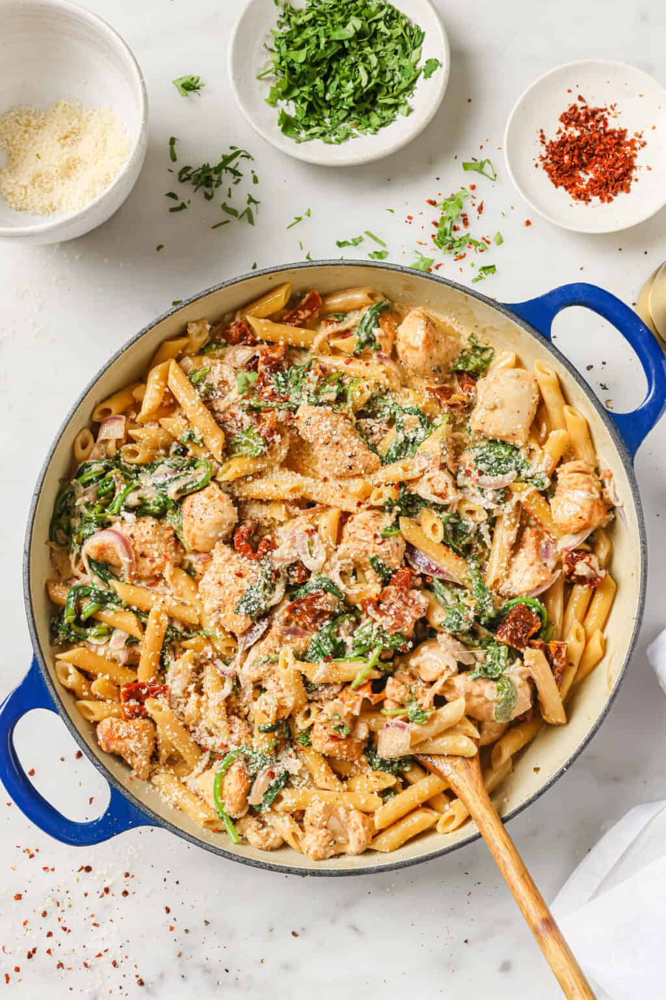

Home
Marry Me Chicken Recipe

-marry me chicken with pasta-
Marry me chicken is sautéed chicken in a
creamy sun-dried tomato sauce. You can serve
it with pasta as suggested or on its own.
They say the way to someone's heart is
through their stomach, and this is worthy
of a marriage proposal!
Ingredients!
- 1 ½ pounds skinless,
boneless chicken breast halves
- 2 tablespoons butter
- 3 cloves garlic, minced
- ½ teaspoon dired oregano
- ¼ teaspoon ground thyme
- ½ cup chicken brith, divided
- 1 (16 ounce) package of your
preferred pasta type
- 1 tablespoon all purpose flour
- ½ cup freshly shaved Parmesan cheese
- ¼ cup whipping cream
- ¼ cup chopped sun-dried flakes
- salt to taste
Steps!
- Gather ingredients. preheat the oven
to 175 degrees C
- Place chicken breasts on a flat work
surface. Slice horizontally through
the middle, being careful not to cut
all the way through to the other side.
Open the 2 sides and spread them out
like an open book to butterfly.
- Melt butter in a large, oven-safe
skillet over medium-high heat. Add
garlic, oregano, thyme. Sauté until
fragrant, about 30 seconds.
- Add chicken and cook until golden
brown but not fully cooked, 3 to 4
minutes per side.
- Pour 1/4 cup chicken broth into the
skillet and bake in the preheated
oven until chicken is no longer pink
in the centers and juices run clear
, about 15 minutes.
- Meanwhile, place bacon in a large
skillet and cook over medium-high heat
, turning occasionally, until evenly
browned, about 10 minutes. Drain bacon
slices on paper towels and let cool
enough to handle, about 5
minutes; chop.
- At the same time, bring a
large pot of lightly salted water
to a boil. Cook angel hair pasta
in the boiling water, stirring
occasionally, until tender yet
firm to the bite, 4 to 5 minutes.
Drain and keep warm.
- Remove skillet from the oven and
transfer chicken to a plate, reserving
juices in the skillet. Keep chicken
warm and place skillet
on the stovetop.
- Whisk flour into the skillet over
medium heat. Add remaining chicken
broth, Parmesan cheese, and
whipping cream. Whisk until
combined.
- Add sun-dried tomatoes, red pepper flakes
, and salt. Add bacon and chicken back into
the skillet.
- Serve on top of hot cooked pasta.
- Enjoy!